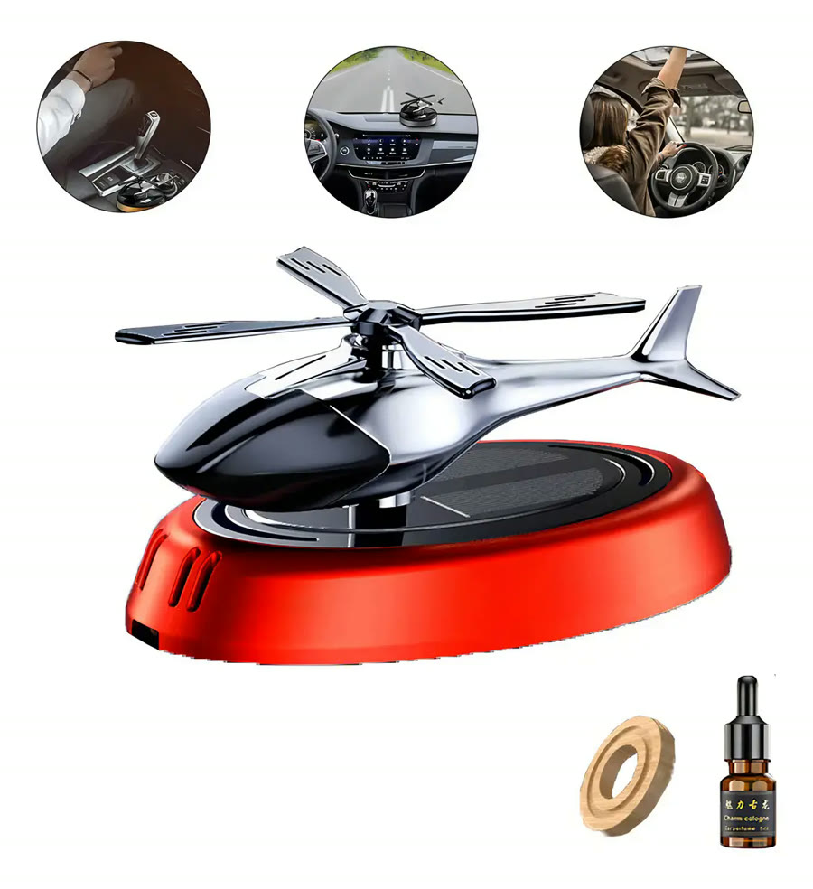
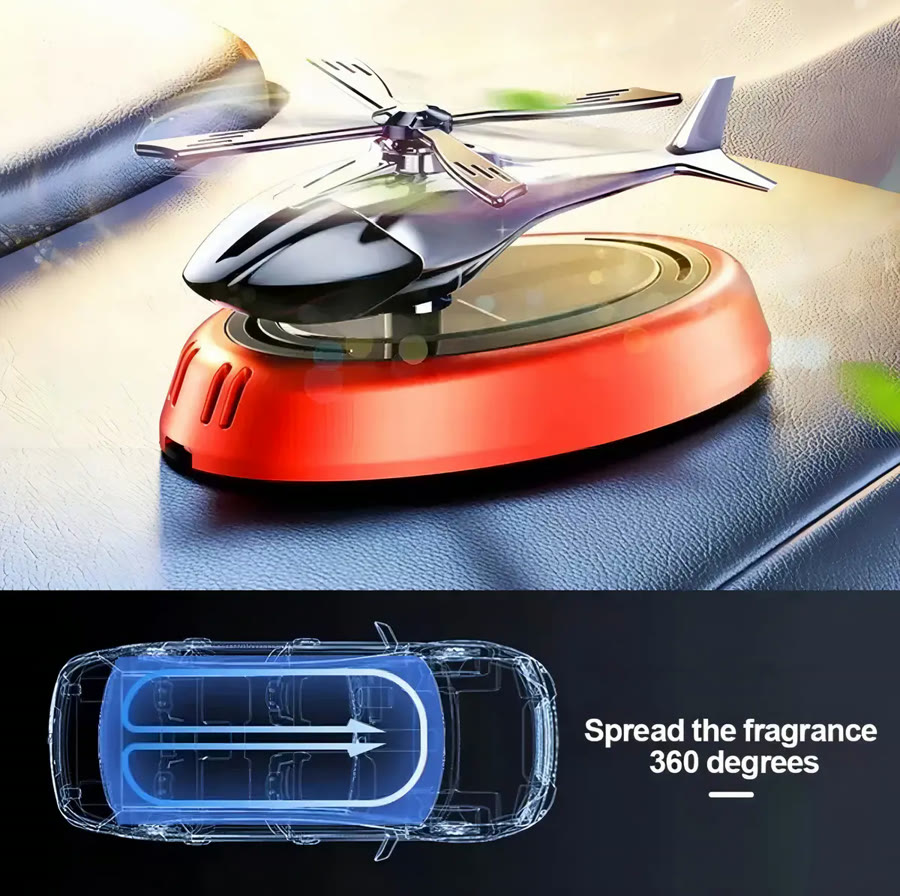
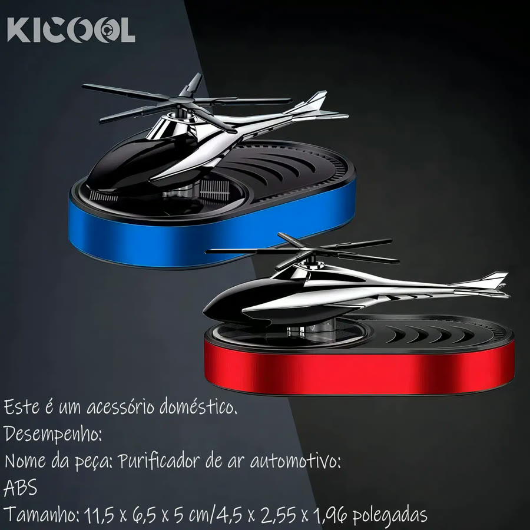
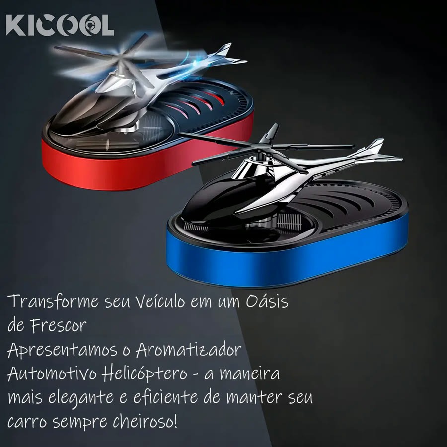

Achado nº 25
Aromatizador de carro em forma de helicóptero com hélice solar





O que diz a página oficial do produto
- Aromatizador de carro em forma de helicóptero, para colar no painel
- Funciona com energia solar, sem pilhas; segundo o anúncio, a hélice gira com a luz do sol e espalha o aroma
- Vem com óleo de lavanda (5 mL) e uma borracha adesiva dupla face para fixar no painel
- O anúncio orienta instalar longe do airbag
- Mede 11,5 cm por 6,5 cm por 5 cm e é feito de plástico ABS
- A cor da base é sortida
- No Mercado Livre, tem nota 4,6 com mais de 580 avaliações e mais de mil vendidos
Link de afiliado: se você comprar por ele, a Achadaria pode receber uma comissão, sem custo extra para você. Preço, estoque e entrega são da loja e podem mudar; confira lá antes de comprar.